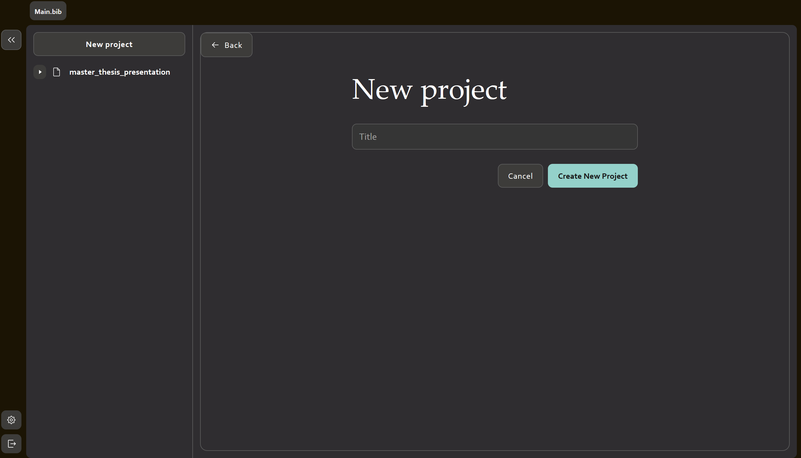
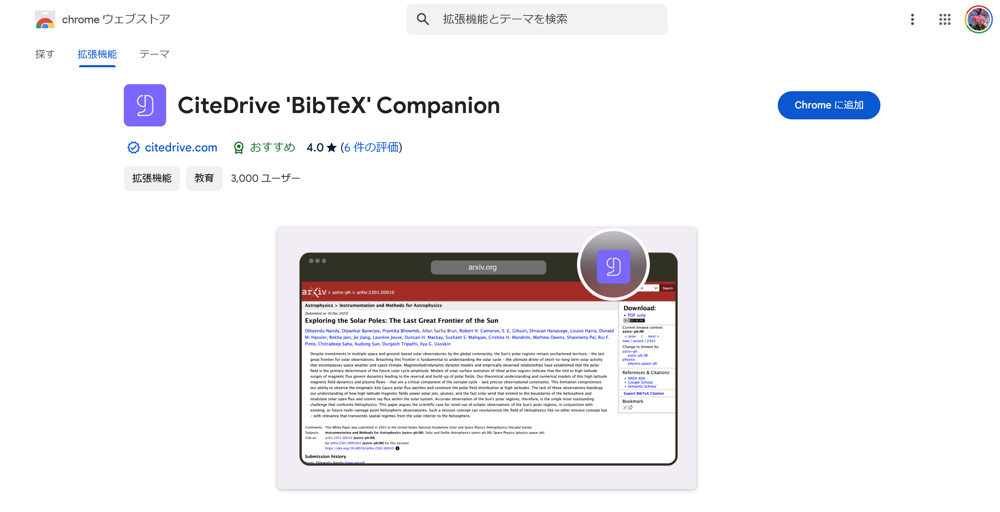
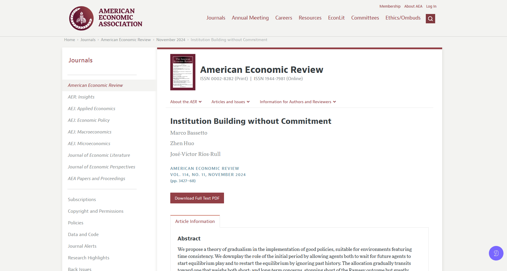
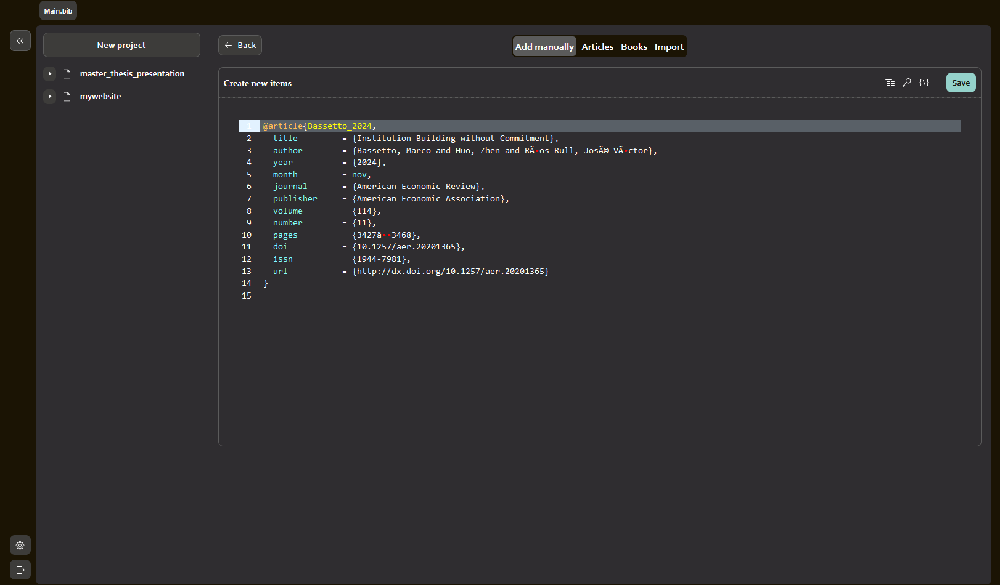
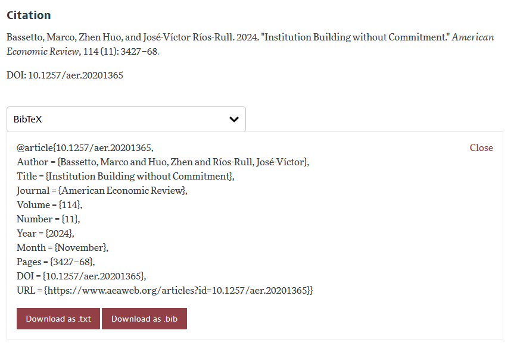
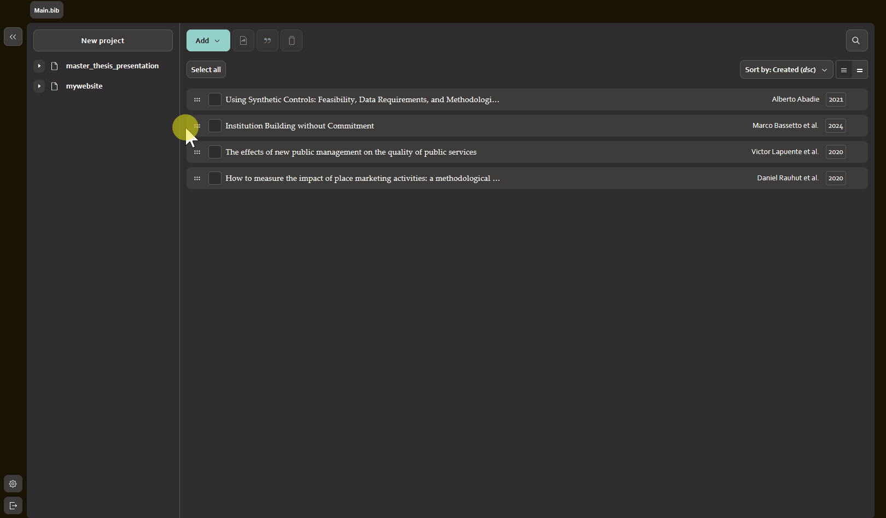
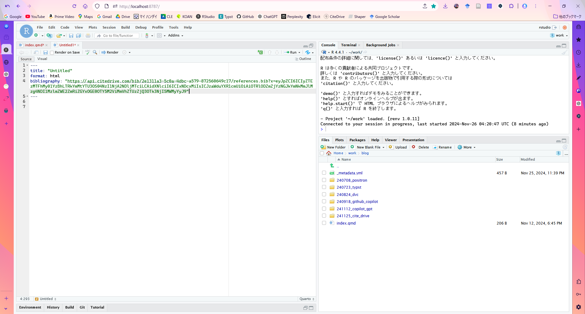
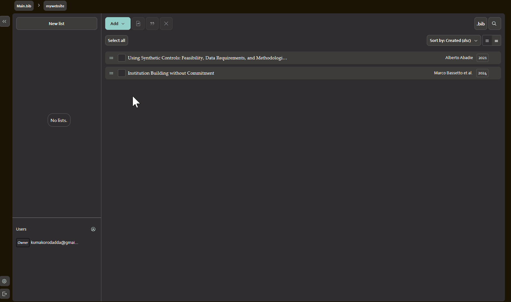

ブログは基本的に常体で書くことが多いのだが、この記事は途中まで敬体で書かれている。なぜかと言うと、途中までこの記事はTipsに載せるつもりだったからだ。
僕は途中まで本気でこれを使っておけば文献管理は問題ない、という気持ちで書いていたのだが、途中でZoteroの方が全然楽じゃね…？と気づいてしまい、ブログ行きになってしまった悲しいポストがこれである。
割と書いてしまったので捨てるに捨てられず、成仏させるためにここに置いておく。プレゼン程度だったら全然使えると思うから、RStudioユーザーは気が向いたら使ってみてね…。
はじめに
文献管理には何を使っていますか？
ZoteroやEndnote、Paperpileなど様々なツールがあると思いますが、最近CiteDriveなるものをR Markdown公式がツイートしていました。
📚 Tired of juggling citations? Meet (CiteDrive?)—your ultimate solution for seamless citation and reference management with #RStudio, #RMarkdown, and #QuartoPub. Simplify your workflow today! 🚀 Learn more: https://t.co/tEQyezjwEa#RStats #DataScience #QuartoPub #BibTeX #LaTeX…
— R Markdown ((rmarkdown?)) November 25, 2024
どうやらOverleaf, R Markdown, Quartoに適した文献管理ツールのようで、Quartoユーザーの僕にとってはいい選択肢になるのでは？と思いました。
とは言っても修士論文の文献管理はZoteroで行っており、それをいまさら変えるつもりはなかったので、とりあえずプレゼンスライド用にQuarto \(\times\) CiteDriveで使ってみました。
結果として、簡単で使いやすく、文献管理ツールを使ったことがない方でも大きな抵抗感なく使えると思い、今回まとめることにしました。
CiteDriveの準備
CiteDriveのいいなと思った点に、アプリをインストールしなくてよいということが挙げられ、そのためブラウザ上ですべてが完結します。
まずはCiteDriveにアクセスします。すると右上にSign upがあると思うので、そこからユーザー登録します。
ホーム画面へ行くので、New Projectより任意のプロジェクト名を入力し、Create New Projectを選択します。

次に拡張機能をインストールします1。
chrome ウェブストアやFirefox Browser ADD-ONSからCiteDriveと検索して出てきたものをインストールします。どちらも1番上に出てくることを確認したので、特に問題ないと思います。

ちなみに上のツールバーにピン止めしておくと使いやすくお勧めです。
- ユーザー登録
- 拡張機能のインストール
これで準備は完了です。
文献を追加する
引用したい2論文のページに行きます。今回は Bassetto et al. (2024) を例に紹介します。
追加の方法は2種類あります。
- 拡張機能を使って追加する
.bibファイルを使って追加する
拡張機能を利用
まず1つ目です。
論文のページに行き、ツールバーの拡張機能ボタン、もしくは右下に出ているCiteDriveボタンをクリックします。

すると、次のような画面に進みます。

このように出てきて、問題がなければ右上のSaveをクリックし、保存します。
しかし、冒頭にも書いたようにまだ完璧ではないツールなので、たまにおかしくなることがあり、今回も文字化けのような現象が起きています。
このような場合は手で修正するのが早いでしょう。名前とページの部分で修正が必要なので、まず名前は「Marco Bassetto & Zhen Huo & José-Víctor Ríos-Rull」とFirst name Last name & …となるように&でつないでいきます。ページは-（ハイフン）が文字化けしているので、ハイフンに直します。「3427–68」といった具合です。
どうしてもページ情報を読み取っているので、その過程でおかしくなってしまうみたいですね。
できたら右上のSaveで保存します。
.bibファイルを利用
次に2つ目の手順です。
論文のページでは、citationをexportできるようになっています。一般的にはRISやBibTeXを使うことが多いと思いますが、ここではBibTeXを使用します。例えばAEAのページでは、論文ページの下の方へ行くと、Citationというところがあり、そこから.bibファイルをダウンロードできます。

選択ボックスからBibTeXを選択し、「Download as .bib」をクリックし、ダウンロードします。
次にCiteDriveの任意のプロジェクトから、「Add」\(\rightarrow\)「Upload BibTeX / RIS files」を選択し、「参照…」から、今ダウンロードした.bibファイルをアップロードします。
.bibファイルは必要な情報を正確に含んでいる（はず）なので、画面の情報から作成する1の手順より正確です。
限界に気づく
…とここまで書いて、CiteDriveの限界に気が付いた。
.bibファイルを読み込んでも、それを正確に認識してくれないのだ。特に著者が複数人いる場合。
.bibファイルの書かれ方は結構いろいろあり、「Last name, First name and …」みたいな書き方もあれば「First name Last name, …」みたいな書き方もある。しかし、CiteDriveはこれに対する認識力が欠如しており、「First name Last name & …」という書き方しか認識してくれないようだ（阿部調べ）。
これではせっかく正確な情報を写すために.bibファイルをダウンロードしてきているのに、手直しが必要なのでは元も子もない。
ここは今後改善されていくのだろうが、現段階ではあまりに不便すぎる。Zotero等は自動で認識して整理してくれるので大変ありがたい。
しかしこれではZoteroでいい！となってしまう（実際なりそうなのだが）ので、引用が非常に便利という利点（これは本当にそう）を伝えるべく、この点には目をつむって書き進めていこうと思う。
CiteDrive内を整理
追加した文献は、プロジェクトに自動追加されるのではなく、ホームのリストにプールされます。そのため、使いたいプロジェクトに振り分けてやる必要があります。

文献をプロジェクトに入れることができたら、左側のリストから使いたいプロジェクトを選択します。すると、画面右上に「.bib」というボタンがあるのでそこをクリックし、出てきたURLをコピーしておきます。
続いてRStudioに移ります。
Quarto内で引用
RStudioで新しいQuartoファイルもしくはR Markdownファイルを開きます。
---で囲まれたYAMLヘッダーと呼ばれる部分がありますが、ここにbibliography: "コピーしたURL"という感じで追加します。

長ったらしいですが、これでOKです。
次にCiteDriveに戻り、プロジェクト内で引用したい論文にチェックを入れ、上の引用符をクリックします。

これで引用するためのコードがコピーされました。
RStudioに戻り、任意の場所にペーストすると、[@bassetto_institution_2024]のように出てきますので、このままRenderすれば、(Bassetto et al. 2024) のように出力されます。Bassetto et al. (2024) のようにしたければ、四角括弧を外す必要がありますので、用途に応じて変えてみてください。
おわりに
このように、文献追加のところさえうまくいけば、ローカルにアプリをインストールする必要もなくブラウザ上で完結するし、.bibファイルをエクスポートする必要もないので非常に便利なツールなのです。
しかし、その課題点が僕には大きく、本格採用には至っていません。僕は公式推奨のツールはなるべく使ってみたい人間なので、改善点が早期に修正され、満足いく使用感が得られるようになることを望みます。
興味があれば、使ってみてください。